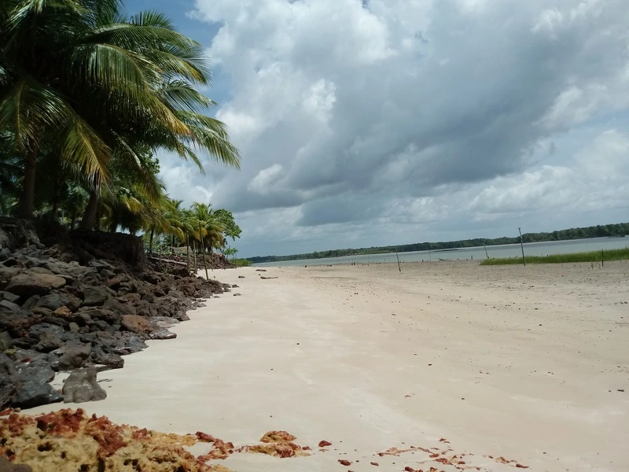

Praia do Arrombado

Praia do Guará

Praia do Japerica

Praia do Paxicú

Praia da Romana
Praia do Arrombado
Habitada por pescadores, com uma extensão aproximada de 2 km. Realiza-se a travessia em cerca de 1h10m, saindo da Orla do Abade. Não possui infraestrutura de hospedagem, alimentos e bebidas.
Praia do Guará
A Praia do Guará está localizada no litoral Curuçaense. Realiza-se a travessia em cerca de 1h45m, saindo da Orla do abade. Não possui infraestrutura de hospedagem, alimentos e bebidas.
Praia do Japerica
A Praia do Japerica possui uma extensão de aproximadamente 1 km. Realiza-se a travessia em cerca de 30m, saindo da Orla do abade. Não possui infraestrutura de hospedagem, alimentos e bebidas.
Praia do Paxicú
A Praia possui uma extensão de aproximadamente 2 km, com faixa de areia fina e vegetação litorânea. Realiza-se a travessia em cerca de 1h, saindo da Orla do abade. Não possui infraestrutura de hospedagem, alimentos e bebidas.
Praia da Romana
Habitada por pescadores, com uma extensão aproximada de 11 km. Realiza-se a travessia em cerca de 1h30m, saindo da Orla do Abade. Não possui infraestrutura de hospedagem, alimentos e bebidas.